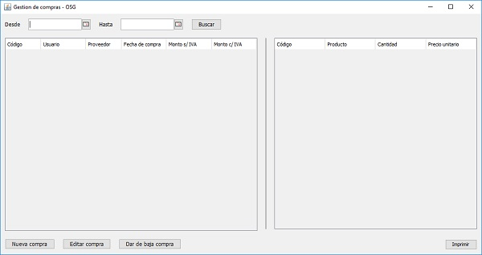
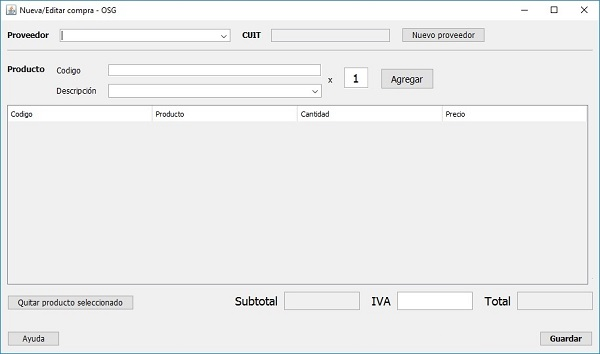

Tal como se titúla este módulo usted desde aqui podrá gestionar las compras realizadas a proveedores

El inicio de la ventana muestra una table donde se listaran las ultimas compras realizadas y, en la parte derecha se motrará un detalle de los prodcutos que contiene esa compra. En el sector superior podrá establecer un rango de fechas entre los cuales listar las compras realizadas. En la parte inferiór podra realizar respectivamente una nueva compra, al hacer clic en "Editar compra" se abrirá la ventana para poder editar una compra realizada en caso de haber surgido una confusión al momento de crearla. Con el botón "Eliminar compra" se eliminará la compra seleccionada en la tabla.

Al hacer clic en "Nueva venta" se abrirá la ventana de nueva compra donde deberá seleccionar un proveedor (o crear uno nuevo con el botón "Nuevo proveedor", luego seleccionar los productos que se vayan a comprar o que hayan ingresado, para quitar algún prodcuto, deberá presionar "Quitar producto seleccionado" teniendo una fila seleccionada en la tabla. Si corresponde o no, de acuerdo al tipo de proveedor deberá ingresar un valor en el campo "IVA".
Para la edición de una compra en caso de haber ingresado erroneamente un dato, simplemente deberá seleccionar una compra en la tabla (resaltada con auzl) y luego presionar "Editar compra" se abrirá la misma ventana que se muestra arriba de este parrafo, con los campos ya rellenados, solo deberá cambiar los campos deseados, una vez terminado presionará el botón "Guardar" para actualizar los productos y el stock, esta última acción sirve tanto para la nueva compra como para la edición.
Nota: en caso de un eventual incremento del valor de los productos, el precio del mismo deberá ser modificado en las propiedades del producto, dentro del módulo "Gestión de productos"